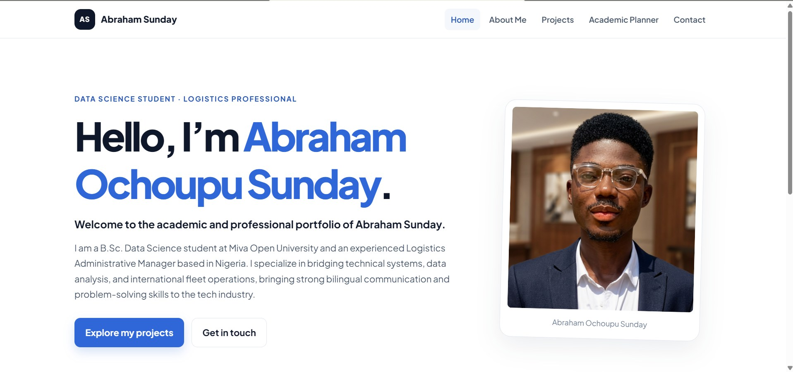
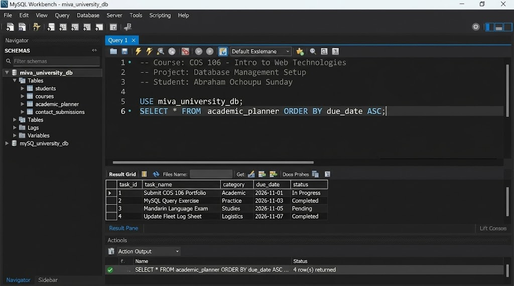
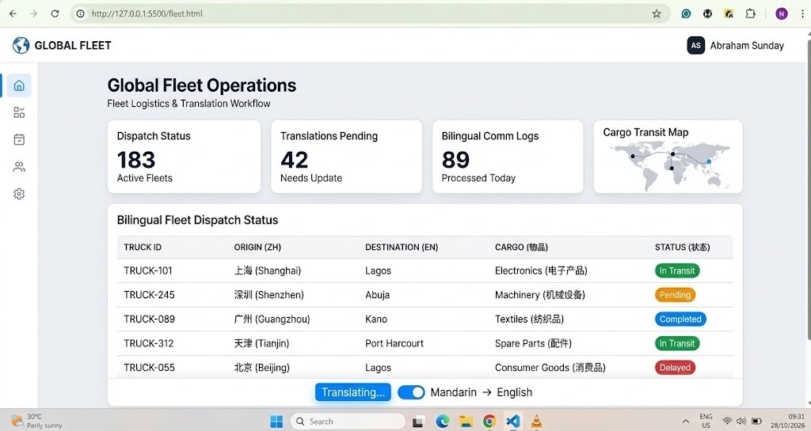

Web development
Student Academic Portfolio
A responsive student portfolio built with HTML, CSS, and Vanilla JavaScript for Miva Open University (COS 106).
View ProjectSelected work
A selection of academic and sample projects combining web development, database skills, and logistics experience.

Web development
A responsive student portfolio built with HTML, CSS, and Vanilla JavaScript for Miva Open University (COS 106).
View Project
Database
A sample local database configuration and query-formulation project using MySQL Server and MySQL Workbench.
View Project
Operations and translation
A simulated data-entry and operations-tracking dashboard concept for international truck maintenance and cargo transport.
View Project